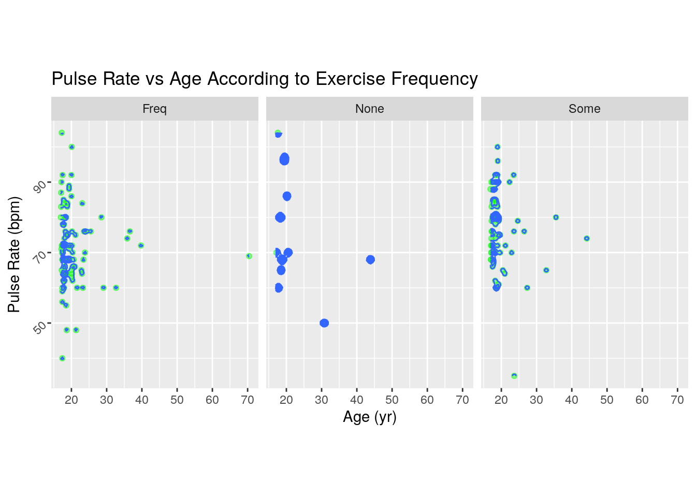
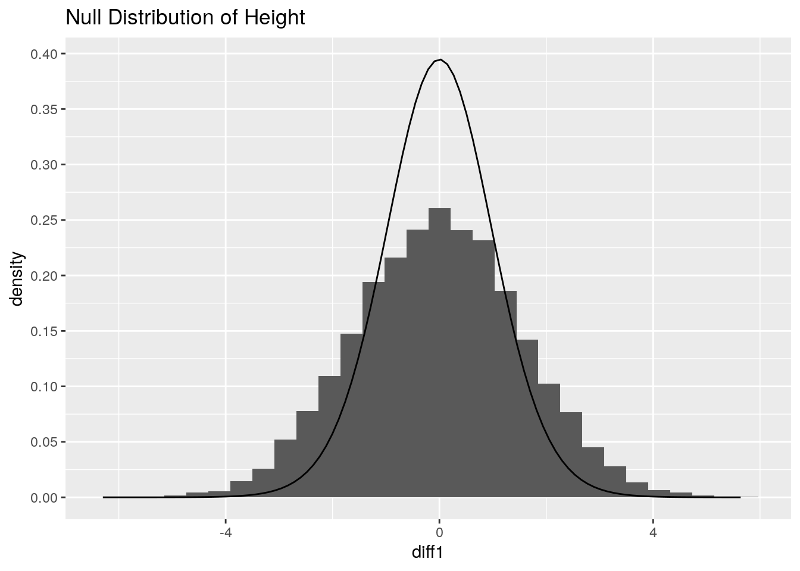
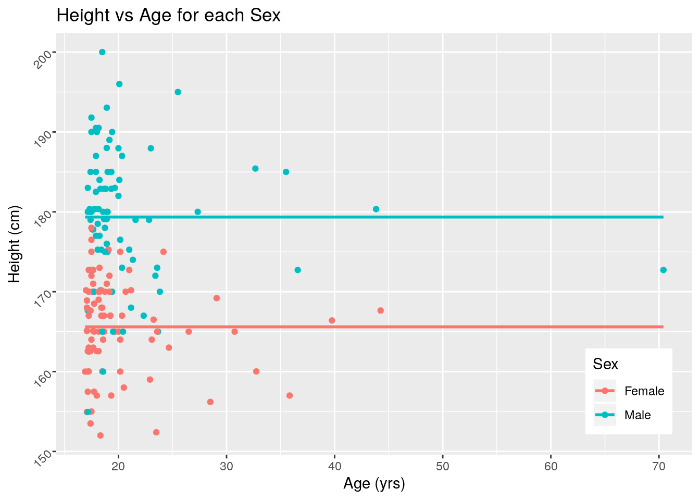
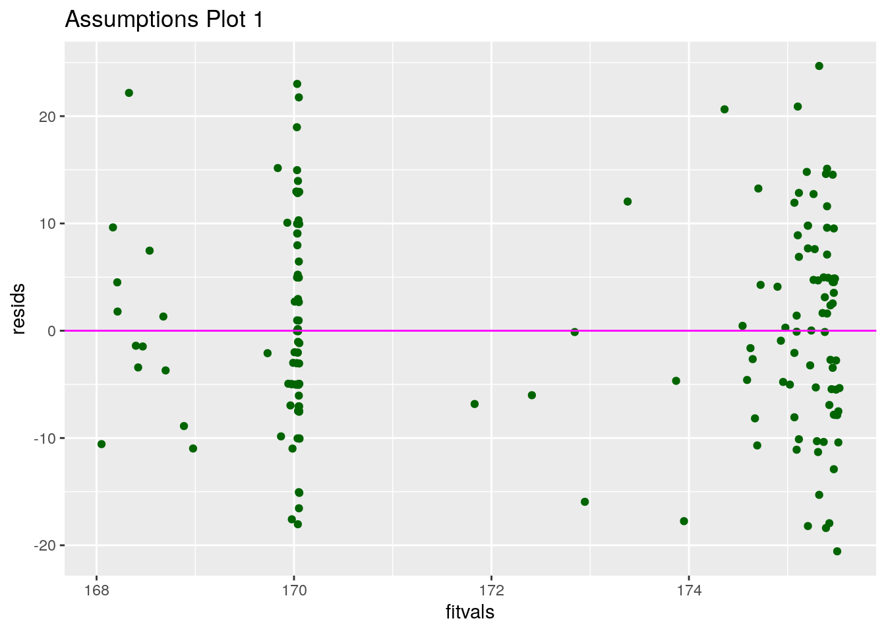
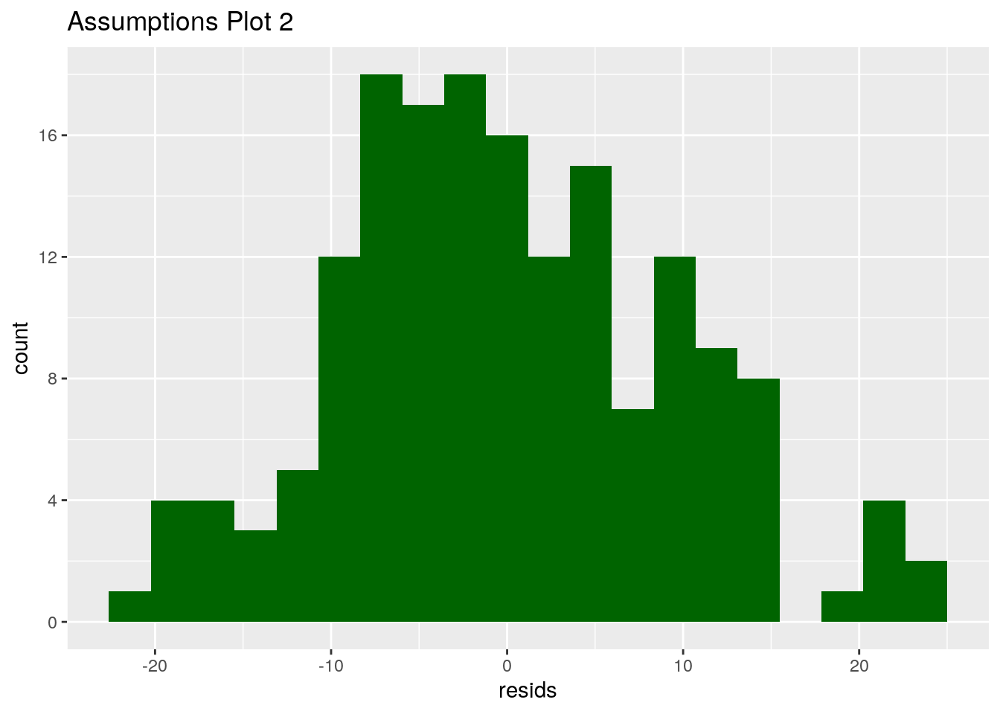
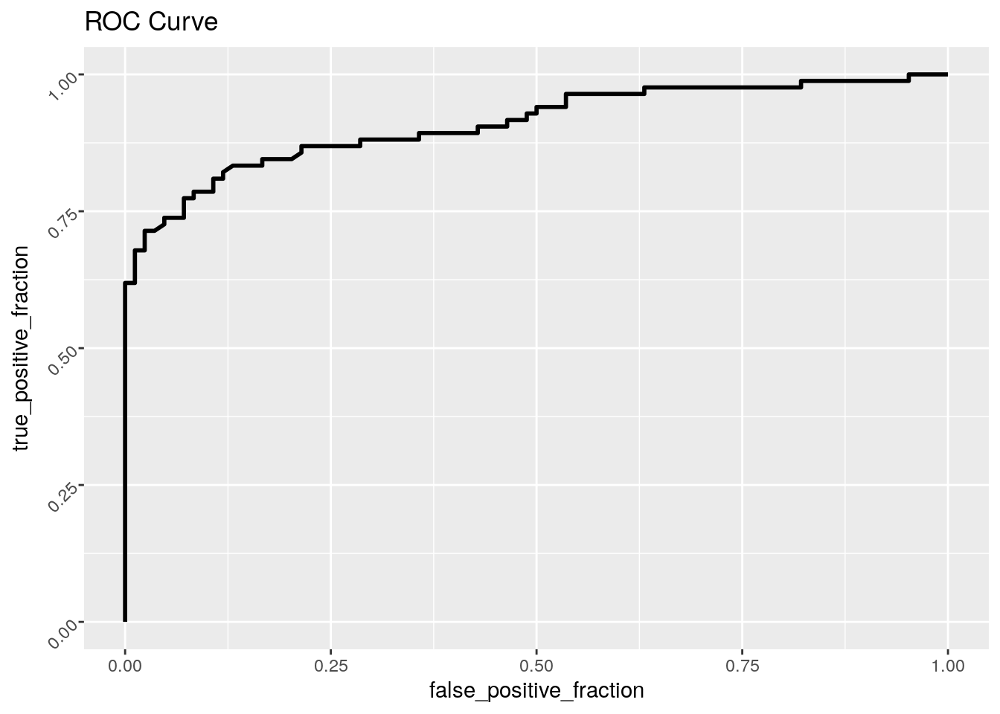
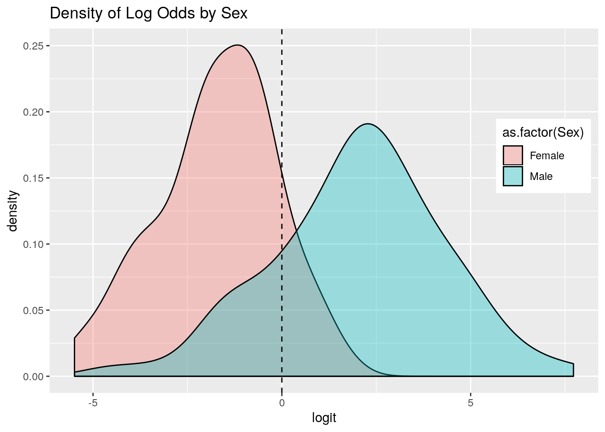

class_diag<-function(probs,truth){
tab<-table(factor(probs>.5,levels=c("FALSE","TRUE")),truth)
acc=sum(diag(tab))/sum(tab)
sens=tab[2,2]/colSums(tab)[2]
spec=tab[1,1]/colSums(tab)[1]
ppv=tab[2,2]/rowSums(tab)[2]
if(is.numeric(truth)==FALSE & is.logical(truth)==FALSE) truth<-as.numeric(truth)-1
ord<-order(probs, decreasing=TRUE)
probs <- probs[ord]; truth <- truth[ord]
TPR=cumsum(truth)/max(1,sum(truth))
FPR=cumsum(!truth)/max(1,sum(!truth))
dup<-c(probs[-1]>=probs[-length(probs)], FALSE)
TPR<-c(0,TPR[!dup],1); FPR<-c(0,FPR[!dup],1)
n <- length(TPR)
auc<- sum( ((TPR[-1]+TPR[-n])/2) * (FPR[-1]-FPR[-n]) )
data.frame(acc,sens,spec,ppv,auc)
}Introduction: For this project, I used the dataset “survey” from the MASS package. I also used this dataset in my last project, so I’m familiar with the different variables and observations. It contains 237 observations and 12 different variables, all results from an undergraduate student questionnaire from the University of Adelaide which asked them about sex, age, height, exercising frequency, smoking habits and pulse rate. The categorical variables I’ll be looking at are mainly exercise, which has three different groups, and smoking frequency, which also has three different groups. The numerical variables I’ll be looking at are pulse, height and age. Lastly, the binary variable is sex, with male and female groups.
#Dataset
library("MASS")
survey1 <- na.omit(survey)MANOVA Test
library(ggplot2)
manova1 <- manova(cbind(Age, Pulse)~Sex, data = survey1)
summary(manova1)## Df Pillai approx F num Df den Df Pr(>F)
## Sex 1 0.0061588 0.51125 2 165 0.6007
## Residuals 166#type 1 error
1-(0.95^7)## [1] 0.3016627#bonferroni correction
0.05/7## [1] 0.007142857#multivariate normality
ggplot(survey1, aes(x=Age, y=Pulse)) + geom_point(alpha = 0.45, color = "green") + geom_density_2d(h=2) + coord_fixed() + facet_wrap(~Exer) + xlab("Age (yr)") + ylab("Pulse Rate (bpm)") + ggtitle("Pulse Rate vs Age According to Exercise Frequency") + theme(axis.text.y = element_text(angle=45))
Explanation of MANOVA Test: I conducted a one-way multivariate analysis of variance, or MANOVA, to determine if the means for both females and males differed for age and pulse rate in these undergraduate students. My null hypothesis is that the means for both sexes in regards to age and pulse do not differ, and my alternate hypothesis is that the means differ between males and females for age and pulse rate. Looking at the results and the p-value of 0.6007, it is evident that the means for both sexes are equal for Age and Pulse rate, and I cannot reject the null hypothesis. If the p-value turned out to be significant I would have run two ANOVA tests and three post-hoc t tests, one for each exercise group, creating a total of six tests. The probability of a type 1 error is 0.3016627, and with the bonferroni correction it decreases to 0.007142857, meaning there was a difference of 0.29452. The assumptions for the MANOVA test are that the data contains random samples, independent observations and the dependent variables have multivariate normality. By looking at the plot generated above, I can say that these assumptions are not likely to have been met.
Randomization Test
library(dplyr)##
## Attaching package: 'dplyr'## The following object is masked from 'package:MASS':
##
## select## The following objects are masked from 'package:stats':
##
## filter, lag## The following objects are masked from 'package:base':
##
## intersect, setdiff, setequal, union#type of test: Welch Two Sample t-test
t.test(data = survey1, Height~Sex)##
## Welch Two Sample t-test
##
## data: Height by Sex
## t = -12.358, df = 147.99, p-value < 2.2e-16
## alternative hypothesis: true difference in means is not equal to 0
## 95 percent confidence interval:
## -15.94564 -11.54912
## sample estimates:
## mean in group Female mean in group Male
## 165.6026 179.3500diff1 <- vector()
for(i in 1:10000) {
rand=survey1
rand$Height=sample(rand$Height)
diff1[i] <- mean(rand[rand$Sex=='Female',]$Height)-mean(rand[rand$Sex=='Male',]$Height)
}
data.frame(diff1) %>% ggplot(aes(diff1)) + geom_histogram(aes(y=..density..), bins = 30) + stat_function(fun = dt, args = list(df=24), geom = "line") + ggtitle("Null Distribution of Height") + scale_y_continuous(breaks = seq(0,0.4,0.05))
quantile(diff1, 0.975)## 97.5%
## 3.028833qt(0.975, df=24)## [1] 2.063899Explanation of Randomization Test: I chose to do a two sample t test for the randomization, with the null hypothesis being that the mean of the Heights do not differ across males and females. The alternative hypothesis is that the mean of the Heights do differ between males and females. The t-value is -12.358 and the df is 147.99. The p-value from the test is less than 0.00000000000000022, meaning that there is a significant different between the Heights of males and females. Therefore, I can reject the null hypothesis. The mean Height of males is 179.35 cm, and the mean Height of females is 165.6026 cm. The histogram above displays the null distribution and test statistic.
Linear Regression Model
library(sandwich)
library(lmtest)## Loading required package: zoo##
## Attaching package: 'zoo'## The following objects are masked from 'package:base':
##
## as.Date, as.Date.numeric#mean-center numeric variables
height_c <- survey$Height-mean(survey1$Height)
age_c <- survey$Age-mean(survey1$Age)
#regression model
fit <- lm(Height ~ Exer*Age, data = survey1)
summary(fit)##
## Call:
## lm(formula = Height ~ Exer * Age, data = survey1)
##
## Residuals:
## Min 1Q Median 3Q Max
## -20.5619 -6.9847 -0.9862 6.5598 24.6806
##
## Coefficients:
## Estimate Std. Error t value Pr(>|t|)
## (Intercept) 177.8528 3.3366 53.303 <2e-16 ***
## ExerNone -14.5782 8.9880 -1.622 0.107
## ExerSome -7.5966 6.2615 -1.213 0.227
## Age -0.1369 0.1522 -0.900 0.370
## ExerNone:Age 0.4151 0.4009 1.035 0.302
## ExerSome:Age 0.1251 0.3022 0.414 0.679
## ---
## Signif. codes: 0 '***' 0.001 '**' 0.01 '*' 0.05 '.' 0.1 ' ' 1
##
## Residual standard error: 9.727 on 162 degrees of freedom
## Multiple R-squared: 0.07469, Adjusted R-squared: 0.04614
## F-statistic: 2.615 on 5 and 162 DF, p-value: 0.02645ggplot(survey1, aes(x=Age, y=Height, group=Sex)) + geom_point(aes(color=Sex)) + geom_smooth(method = "lm", formula = y~1, se=F, fullrange=T, aes(color=Sex)) + theme(legend.position = c(0.9, 0.15)) + xlab("Age (yrs)") + ylab("Height (cm)") + ggtitle("Height vs Age for each Sex") + theme(axis.text.y = element_text(angle=45))
#assumptions
resids <- fit$residuals
fitvals <- fit$fitted.values
ggplot() + geom_point(aes(fitvals, resids), color = "darkgreen") + geom_hline(yintercept = 0, color = 'magenta') + ggtitle("Assumptions Plot 1")
ggplot() + geom_histogram(aes(resids), bins = 20, fill = "darkgreen") + ggtitle("Assumptions Plot 2") + scale_y_continuous(breaks = seq(0,20,4))
#robust standard errors
summary(fit)$coef[, 1:2]## Estimate Std. Error
## (Intercept) 177.8527971 3.3366091
## ExerNone -14.5781996 8.9880156
## ExerSome -7.5965839 6.2615476
## Age -0.1369404 0.1521976
## ExerNone:Age 0.4151425 0.4009248
## ExerSome:Age 0.1250937 0.3022070coeftest(fit, vcov = vcovHC(fit))[, 1:2]## Estimate Std. Error
## (Intercept) 177.8527971 3.7471872
## ExerNone -14.5781996 17.1117967
## ExerSome -7.5965839 6.7202897
## Age -0.1369404 0.1759690
## ExerNone:Age 0.4151425 0.8536767
## ExerSome:Age 0.1250937 0.3301722#proportion of variation
summary(fit)$r.sq## [1] 0.07469393Explanation of Linear Regression Model: For the coefficient estimates, I can see the intercept estimate is 177.85cm, when both exercise levels and age are held constant. When the student does not exercise, the height estimate decreases by about 14.58cm, and if the student does some exercise, the height estimate decreases by about 7.597cm. When the Exercise and Age variables interact, I see that those students who did not exercise had a height estimate of about 0.415cm greater, and those who did some exercise had a height estimate of about 0.125cm greater. Due to the different sampling method and the outliers being removed, the standard errors change with the coeftest after calculating robust standard errors (all of them increased). Looking at the assumption plots, I can see that all the assumptions have been met. The proportion of variance in the outcome of the overall model is 0.07469393, given by the r squared value.
Bootstrapping
boot_dat <- survey[sample(nrow(survey1), replace = TRUE),]
samp_dist <- replicate(5000, {
boot_dt <- survey[sample(nrow(survey), replace = TRUE),]
fit2 <- lm(Height~Exer+Age, data = boot_dt)
coef(fit2)
})
samp_dist %>% t %>% as.data.frame %>% summarize_all(sd)## (Intercept) ExerNone ExerSome Age
## 1 2.062617 2.367195 1.429383 0.08786608Explanation of Bootstrapping: After computing bootstrapped standard errors, I can see that the standard error for those who did not exercise is 2.328501, the SE for those who did some exercise is 1.405974, and the SE for Age is 0.0889. The intercept SE is 2.048675, which is less than both the original and robust intercept SE’s. These standard errors are smaller than the original standard errors, and also smaller than the robust SE’s.
Logistic Regression
library(tidyverse)## ── Attaching packages ────────────────────────────────── tidyverse 1.3.0 ──## ✔ tibble 2.1.3 ✔ purrr 0.3.3
## ✔ tidyr 1.0.2 ✔ stringr 1.4.0
## ✔ readr 1.3.1 ✔ forcats 0.4.0## ── Conflicts ───────────────────────────────────── tidyverse_conflicts() ──
## ✖ dplyr::filter() masks stats::filter()
## ✖ dplyr::lag() masks stats::lag()
## ✖ dplyr::select() masks MASS::select()library(ggplot2)
library(knitr)
fit4 <- glm(Sex~Pulse+Height, data = survey1, family = binomial(link = "logit"))
coeftest(fit4)##
## z test of coefficients:
##
## Estimate Std. Error z value Pr(>|z|)
## (Intercept) -46.0051310 7.0692961 -6.5077 7.629e-11 ***
## Pulse -0.0066152 0.0183591 -0.3603 0.7186
## Height 0.2704565 0.0406024 6.6611 2.718e-11 ***
## ---
## Signif. codes: 0 '***' 0.001 '**' 0.01 '*' 0.05 '.' 0.1 ' ' 1exp(coef(fit4))## (Intercept) Pulse Height
## 1.047672e-20 9.934066e-01 1.310563e+00#confusion matrix
prob <- predict(fit4, type = "response")
prob## 1 2 5 6 7 8
## 0.543699207 0.801238471 0.166402313 0.570708223 0.948186017 0.017412749
## 9 10 11 14 17 18
## 0.700244115 0.192435080 0.013532412 0.010761314 0.015793858 0.951034171
## 20 21 22 23 24 27
## 0.794077708 0.993571317 0.908270500 0.912585426 0.966062921 0.528156802
## 28 30 32 33 34 36
## 0.728085559 0.203997014 0.896697028 0.185810594 0.901497325 0.992931399
## 38 39 42 44 47 48
## 0.946691840 0.970690727 0.010182032 0.768742426 0.892962065 0.340158887
## 49 50 51 52 53 54
## 0.275807795 0.153089770 0.999557369 0.992837931 0.378756223 0.884538557
## 55 57 59 61 62 63
## 0.942021850 0.020298386 0.841827721 0.984228126 0.241935164 0.841983426
## 65 71 73 74 75 76
## 0.111685469 0.389146716 0.448457589 0.282840879 0.123256470 0.382875455
## 77 79 82 85 86 87
## 0.132094531 0.141535121 0.773413064 0.220772128 0.207238515 0.075662982
## 88 89 91 93 95 97
## 0.371995076 0.881808500 0.952223546 0.136711757 0.878317484 0.992837931
## 98 100 102 104 105 106
## 0.202452302 0.720156897 0.395454874 0.700244115 0.079443032 0.364301330
## 109 110 111 112 113 114
## 0.904966157 0.910989264 0.694660687 0.993224305 0.383436989 0.974229278
## 115 116 117 118 119 120
## 0.080421351 0.023292193 0.030306648 0.996511290 0.396854081 0.956783046
## 122 123 124 125 127 128
## 0.796232699 0.476214830 0.907772914 0.722815443 0.564213561 0.862326541
## 129 130 131 132 134 135
## 0.017412749 0.004106326 0.986087592 0.850586977 0.037115492 0.696942822
## 136 138 140 141 143 144
## 0.989183189 0.951646622 0.216067754 0.683321495 0.569086748 0.885134588
## 145 146 147 148 149 150
## 0.515882620 0.971617236 0.987949174 0.976932646 0.120425397 0.111685469
## 151 152 153 154 155 156
## 0.998036634 0.129090346 0.004513496 0.562586357 0.910451393 0.569812666
## 158 160 161 163 164 166
## 0.239516973 0.982269096 0.202924929 0.995468360 0.345064630 0.248940407
## 167 168 170 172 174 175
## 0.379754242 0.040829215 0.908270500 0.949152388 0.154813015 0.020563167
## 176 177 178 180 181 182
## 0.328382981 0.551160097 0.099218078 0.075662982 0.515882620 0.126940375
## 183 184 185 186 187 188
## 0.070531614 0.379754242 0.674670800 0.260237443 0.079928161 0.140662544
## 189 190 191 192 193 194
## 0.592352592 0.998624530 0.861168413 0.907217587 0.758665641 0.039053826
## 196 197 198 199 200 201
## 0.132094531 0.375648149 0.010248918 0.364301330 0.101608184 0.224014288
## 202 204 205 206 207 208
## 0.676288813 0.035536925 0.870389916 0.246474963 0.006740790 0.035993180
## 209 211 212 214 215 218
## 0.116965645 0.038360290 0.078003750 0.140662544 0.315428030 0.969147005
## 220 222 223 227 228 229
## 0.987188899 0.244369925 0.067744666 0.375648149 0.972866722 0.213835181
## 230 231 233 234 236 237
## 0.972337913 0.304237484 0.128413902 0.035086243 0.947501263 0.269826316class_diag(prob, survey1$Sex)## acc sens spec ppv auc
## Male 0.8511905 0.8333333 0.8690476 0.8641975 0.9099348table(predict = as.numeric(prob>0.5), truth = survey1$Sex) %>% addmargins## truth
## predict Female Male Sum
## 0 73 14 87
## 1 11 70 81
## Sum 84 84 168#ROC
library(plotROC)
ROCplot <- ggplot(survey1) + geom_roc(aes(d=Sex, m=prob), n.cuts = 0) + ggtitle("ROC Curve") + theme(axis.text.y = element_text(angle=45))
ROCplot## Warning in verify_d(data$d): D not labeled 0/1, assuming Female = 0 and Male =
## 1!
calc_auc(ROCplot)## Warning in verify_d(data$d): D not labeled 0/1, assuming Female = 0 and Male =
## 1!## PANEL group AUC
## 1 1 -1 0.9099348prob <- predict(fit4, type = "response")
class_diag <- function(probs, truth){
tab <- table(factor(probs>0.5, levels = c("FALSE", "TRUE")), truth)
acc=sum(diag(tab))/sum(tab)
sens=tab[2,2]/colSums(tab)[2]
spec=tab[1,1]/colSums(tab)[1]
ppv=tab[2,2]/rowSums(tab)[2]
if(is.numeric(truth)==FALSE & is.logical(truth)==FALSE) truth <- as.numeric(truth)-1
ord <- order(probs, decreasing = TRUE)
probs <- probs[ord]; truth <- truth[ord]
TPR = cumsum(truth)/max(1, sum(truth))
FPR = cumsum(!truth)/max(1, sum(!truth))
dup <- c(probs[-1]>=probs[-length(probs)], FALSE)
TPR <- c(0, TPR[!dup], 1); FPR <- c(0, FPR[!dup], 1)
n <- length(TPR)
auc <- sum( ((TPR[-1] + TPR[-n])/2) * (FPR[-1]-FPR[-n]) )
data.frame(acc, sens, spec, ppv, auc)
}
class_diag(prob, survey1$Sex)## acc sens spec ppv auc
## Male 0.8511905 0.8333333 0.8690476 0.8641975 0.9099348#Density Plot
odds <- function(p)p/(1-p)
p <- seq(0,1, by=0.1)
logit <- function(p)log(odds(p))
cbind(p, odds = odds(p), logit=logit(p)) %>% round(4)## p odds logit
## [1,] 0.0 0.0000 -Inf
## [2,] 0.1 0.1111 -2.1972
## [3,] 0.2 0.2500 -1.3863
## [4,] 0.3 0.4286 -0.8473
## [5,] 0.4 0.6667 -0.4055
## [6,] 0.5 1.0000 0.0000
## [7,] 0.6 1.5000 0.4055
## [8,] 0.7 2.3333 0.8473
## [9,] 0.8 4.0000 1.3863
## [10,] 0.9 9.0000 2.1972
## [11,] 1.0 Inf Infsurvey1$logit <- predict(fit4)
survey1$outcome <- factor(survey1$Sex, levels = c("Male", "Female"))
ggplot(survey1, aes(logit, fill=as.factor(Sex))) + geom_density(alpha = 0.35) + geom_vline(xintercept = 0, lty=2) + ggtitle("Density of Log Odds by Sex") + theme(legend.position = c(0.9, 0.65))
#10-fold CV
set.seed(1234)
k=10
data1 <- survey[sample(nrow(survey)), ]
folds <- cut(seq(1:nrow(survey)), breaks = k, labels = F)
diags <- NULL
for (i in 1:k) {
train <- data1[folds !=i, ]
test <- data1[folds == i, ]
truth <- test$Sex
fit5 <- glm(Sex ~ Age+Height, data = survey, family = "binomial")
probs <- predict(fit5, newdata = test, type = "response")
preds <- ifelse(probs > 0.5, 1, 0)
diags <- rbind(diags, class_diag(probs, truth))
}
diags %>% summarize_all(mean)## acc sens spec ppv auc
## 1 0.8197737 0.7847283 0.8518254 0.8434722 NAsummary(fit5)##
## Call:
## glm(formula = Sex ~ Age + Height, family = "binomial", data = survey)
##
## Deviance Residuals:
## Min 1Q Median 3Q Max
## -2.12336 -0.70895 0.06886 0.49056 2.92596
##
## Coefficients:
## Estimate Std. Error z value Pr(>|z|)
## (Intercept) -43.59588 6.00072 -7.265 3.73e-13 ***
## Age 0.01453 0.02427 0.599 0.549
## Height 0.25223 0.03470 7.268 3.65e-13 ***
## ---
## Signif. codes: 0 '***' 0.001 '**' 0.01 '*' 0.05 '.' 0.1 ' ' 1
##
## (Dispersion parameter for binomial family taken to be 1)
##
## Null deviance: 288.27 on 207 degrees of freedom
## Residual deviance: 166.67 on 205 degrees of freedom
## (29 observations deleted due to missingness)
## AIC: 172.67
##
## Number of Fisher Scoring iterations: 5Explanation of Logistic Regression: For this part of the project, my null hypothesis is that when controlling for Pulse Rate, the students’ Height does not explain the variation between the two sexes, and when controlling for Height, the Pulse Rate does not explain the variation in sex. From the results of the logistic regression, I can see that Height does explain variation with a coefficient estimate of 0.270465, while Pulse Rate does not explain variation between sexes with a coefficient estimate of -0.0066152. The Accuracy is 0.8511905, which provides the proportion of classified cases, and the Sensitivity is 0.833, which is the true positive rate. The Specificity is 0.8690476, which is the true negative rate, and the PPV is 0.8641975, and is the positive predicted value. The AUC is 0.9099348, which explains why the ROC plot above is not a perfect curve. After performing the 10-fold CV, I found that the average out of sample Accuracy is 0.8197737, the Sensitivity is 0.7847283, the Specificity is 0.8518254 and the PPV is 0.8434722.
LASSO Regression
library(glmnet)## Loading required package: Matrix##
## Attaching package: 'Matrix'## The following objects are masked from 'package:tidyr':
##
## expand, pack, unpack## Loading required package: foreach##
## Attaching package: 'foreach'## The following objects are masked from 'package:purrr':
##
## accumulate, when## Loaded glmnet 2.0-16#LASSO
y <- as.matrix(survey1$Wr.Hnd)
x <- survey1 %>% dplyr::select(Age, NW.Hnd, Height, Pulse) %>% mutate_all(scale) %>% as.matrix
cv <- cv.glmnet(x,y)
lasso1 <- glmnet(x,y, lambda = cv$lambda.1se)
coef(lasso1)## 5 x 1 sparse Matrix of class "dgCMatrix"
## s0
## (Intercept) 18.80238095
## Age .
## NW.Hnd 1.68162642
## Height 0.05373305
## Pulse .#10-fold CV
set.seed(1234)
k=10
data2 <- survey1[sample(nrow(survey1)), ]
folds <- cut(seq(1:nrow(survey1)), breaks = k, labels = F)
diags <- NULL
for(i in 1:k) {
train <- data2[folds!=i, ]
test <- data2[folds==i, ]
fit5 <- lm(Wr.Hnd~NW.Hnd+Height, data = survey1)
yhat <- predict(fit, newdata = test)
diags <- mean((test$Wr.Hnd-yhat)^2)
}
mean(diags)## [1] 23449.72summary(fit5)##
## Call:
## lm(formula = Wr.Hnd ~ NW.Hnd + Height, data = survey1)
##
## Residuals:
## Min 1Q Median 3Q Max
## -1.72985 -0.30745 0.03575 0.32655 1.34788
##
## Coefficients:
## Estimate Std. Error t value Pr(>|t|)
## (Intercept) -0.312238 0.666572 -0.468 0.64010
## NW.Hnd 0.893038 0.024880 35.893 < 2e-16 ***
## Height 0.013837 0.004939 2.802 0.00569 **
## ---
## Signif. codes: 0 '***' 0.001 '**' 0.01 '*' 0.05 '.' 0.1 ' ' 1
##
## Residual standard error: 0.4938 on 165 degrees of freedom
## Multiple R-squared: 0.9346, Adjusted R-squared: 0.9338
## F-statistic: 1179 on 2 and 165 DF, p-value: < 2.2e-16Explanation of LASSO: For this last part of the project, I chose the Age, NW.Hnd (span of non-writing hand), Height and Pulse variables to see if they had any effect on the Wr.Hnd (span of writing hand). From the results, I can see that the Height and NW.Hnd variables have been retained, while Pulse and Age have not. This means that Height and NW.Hnd have an effect on the WR.Hnd. After performing the 10-fold CV I found the residual standard error to be 0.4938, which is a smaller value than the residual standard error found in the logistic regression (0.8197737) and indicates a better fit.